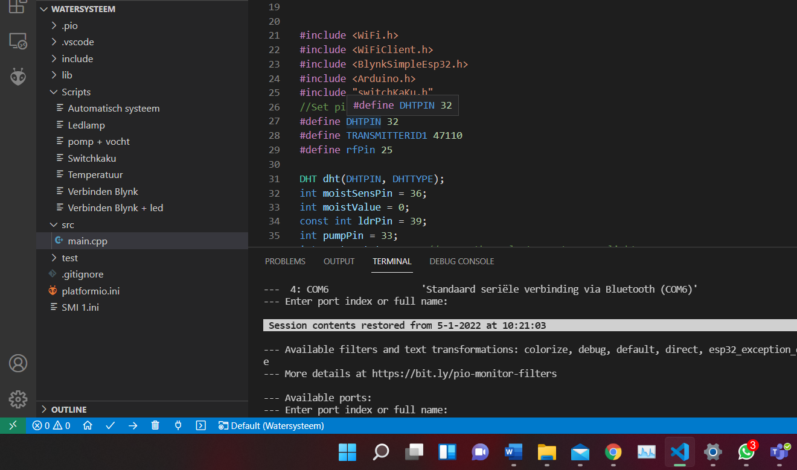
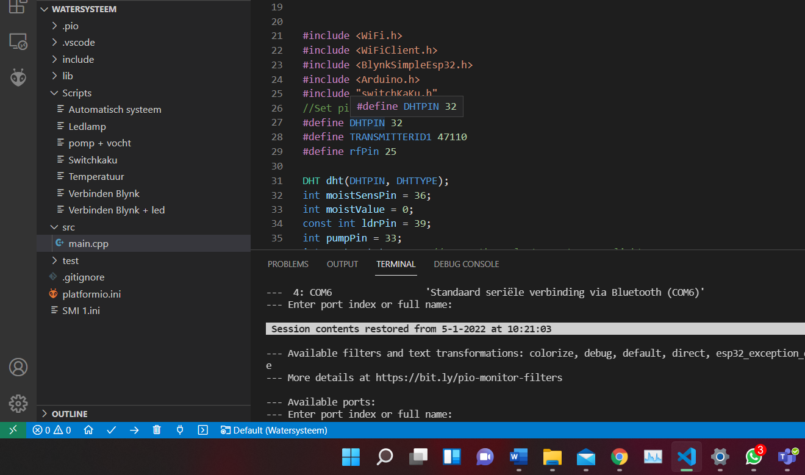
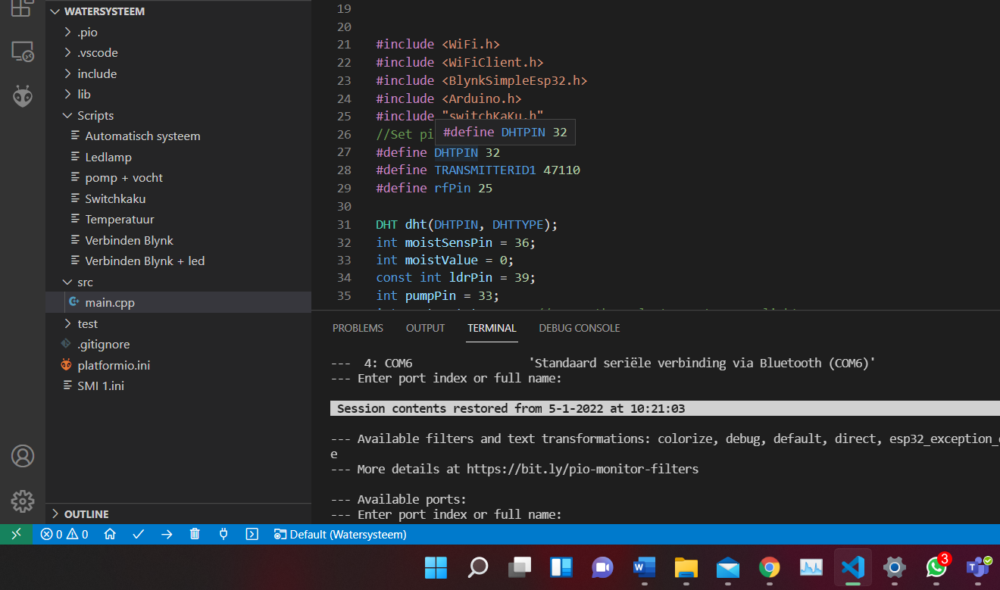

Terug
 

Programmeren
Voor Smart Technology zijn we bezig geweest met het maken van een plantbewateringssysteem die een plant automatisch water geeft bij het behalen van bepaalde waardes, dit kan zijn lage vocht of een hoge temperatuur. Om dit te kunnen doen moet er geprogrammeerd worden. Programmeren is kort gezegd het geven van commandos om een computer aan te kunnen sturen. de programmeertaal die wij hebben gebruikt heet arduino. de computer die wij met deze taal aan gaan sturen heet de ESP32, dit is een kleine chip waarop een aantal functies geprogrammeerd kan worden. Dit programmeren wordt gedaan met het programma Visual studio Code met een plug in genaamd PlatformIO. Platform IO is een tool die gebruikt wordt door ontwikkelaars om te programmeren op een gebruiksvriendelijke manier.
Functies
een aantal functies zijn uitgetest om te kijken of het systeem geschikt is:
- ledlamp
- Vocht meten
- Temperatuur meten
- Pompen
- Blynk App
Bij al deze functies hoorde een code, deze hebben wij geleerd door het volgen van de RobotExchange cursus. hiervoor kregen wij een printplaatje waarin we de verschillende sensoren met draardjes aansloten aan de ESP32. na het goed plaatsen van deze draardjes/sensoren moest de code worden geupload op je ESP, hiervoor gebruikte we de PlatformIO plug-in op Visual Studio Code. als het uploaden lukte kon verdergegaan worden naar de volgende stap. Bij mij werkte deze functies naar behoren, waardoor ik naar de laatste fase van het programmeren kon overgaan. De laatste fase bestaat uit het samenbrengen van de verschillende codes tot een samenhangend geheel. hoe dit heeft uitgepakt is te zien bij de demonstratie van het watersysteem.
